Apache Hudi on Amazon EMR¶
In this exercise you will build incremental data lakes on EMR using Apache Hudi. You can build data lakes using Apache Hudi using Spark Datasource APIs, Hudi Deltastreamer utility and SparkSQL. You will also build a real-time live incremental data lake with Spark Structured Streaming + Amazon Managed Streaming for Apache Kafka (MSK) + Apache Hudi.
In the previous EMR Studio exercise, we linked the Git repository in the Jupyter interface. We will continue to use the same repository to run these exercises.
SSH into the EMR leader node of the cluster "EMR-Spark-Hive-Presto" or open a session using AWS Session Manager for the EMR leader node since we will be running a few commands directly on the leader node.
Apache Hudi with Spark Datasource APIs¶
Open the file workshop-repo -> files -> notebook -> apache-hudi-on-amazon-emr-datasource-pyspark-demo.ipynb in the Jupyter. Make sure the Kernel is set to PySpark.
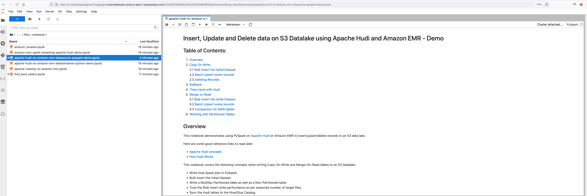
All the instructions required to run the notebook are within the notebook itself.
Download the file workshop-repo -> schema -> schema.avsc to your local desktop and upload this file into the following S3 location (replace "youraccountID" with your event engine AWS account ID): s3://mrworkshop-youraccountID-dayone/schema/schema.avsc
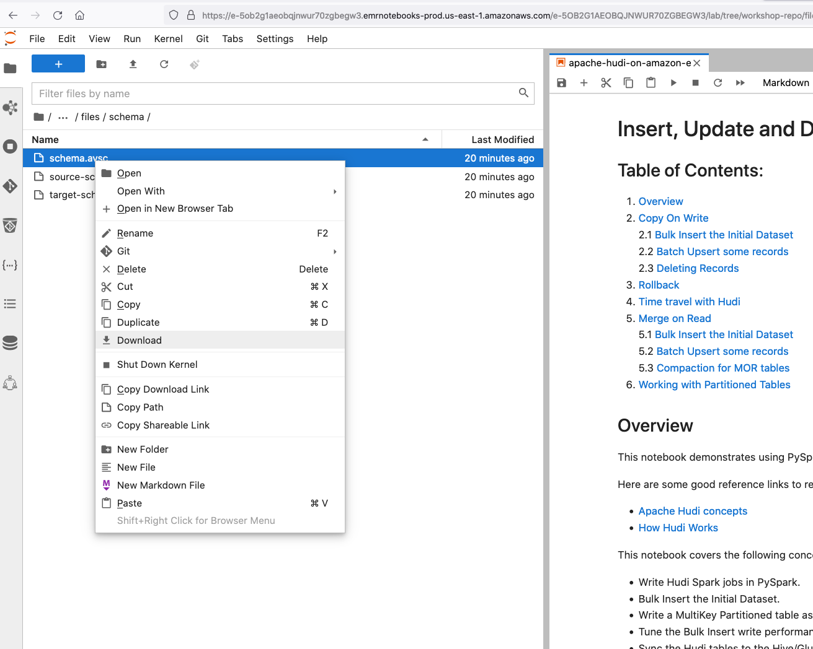
Alternatively, you can run the following commands from the leader node of your EMR cluster. Replace "youraccountID" with your event engine AWS account ID. We will be using this schema AVRO file to run compaction on Merge-On-Read tables.
sudo su hadoop
cd ~
curl -o schema.avsc https://raw.githubusercontent.com/vasveena/amazon-emr-ttt-workshop/main/files/schema/schema.avsc
aws s3 cp schema.avsc s3://mrworkshop-youraccountID-dayone/schema/schema.avsc
Run the blocks of the notebook "apache-hudi-on-amazon-emr-datasource-pyspark-demo.ipynb". Replace "youraccountID" in the S3 paths within the notebook with your AWS event engine account ID.
Apache Hudi with SparkSQL DMLs¶
From EMR 6.5.0, you can write Hudi datasets using simple SQL statements. Let's look at an example.
From the EMR Studio workspace Jupyterlab session, go to workshop-repo -> files -> notebook -> apache-hudi-on-amazon-emr-dml.ipynb. Run all the blocks of this notebook. Replace "youraccountID" in the S3 paths within the notebook with your AWS event engine account ID.
Detailed instructions are within the notebook.
Apache Hudi with Spark Deltastreamer¶
Hudi provides a utility called Deltastreamer for creating and manipulating Hudi datasets without the need to write any Spark code. For this activity, let us copy a few files to the S3 location. Run the following commands in your EMR leader node session created using Session Manager or SSH.
sudo su hadoop
cd ~
curl -o source-schema-json.avsc https://raw.githubusercontent.com/vasveena/amazon-emr-ttt-workshop/main/files/schema/source-schema-json.avsc
curl -o target-schema-json.avsc https://raw.githubusercontent.com/vasveena/amazon-emr-ttt-workshop/main/files/schema/target-schema-json.avsc
curl -o json-deltastreamer.properties https://raw.githubusercontent.com/vasveena/amazon-emr-ttt-workshop/main/files/properties/json-deltastreamer.properties
curl -o json-deltastreamer_upsert.properties https://raw.githubusercontent.com/vasveena/amazon-emr-ttt-workshop/main/files/properties/json-deltastreamer_upsert.properties
curl -o apache-hudi-on-amazon-emr-deltastreamer-python-demo.py https://raw.githubusercontent.com/vasveena/amazon-emr-ttt-workshop/main/files/script/apache-hudi-on-amazon-emr-deltastreamer-python-demo.py
Replace youraccountID with event engine AWS account ID in the files json-deltastreamer.properties, json-deltastreamer_upsert.properties and apache-hudi-on-amazon-emr-deltastreamer-python-demo.py. You can do so using sed command below. Replace 707263692290 with your event engine account ID.
sed -i 's|youraccountID|707263692290|g' json-deltastreamer.properties
sed -i 's|youraccountID|707263692290|g' json-deltastreamer_upsert.properties
sed -i 's|youraccountID|707263692290|g' apache-hudi-on-amazon-emr-deltastreamer-python-demo.py
Now, copy the four files to your S3 location. Replace youraccountID with event engine AWS account ID.
aws s3 cp source-schema-json.avsc s3://mrworkshop-youraccountID-dayone/hudi-ds/config/
aws s3 cp target-schema-json.avsc s3://mrworkshop-youraccountID-dayone/hudi-ds/config/
aws s3 cp json-deltastreamer.properties s3://mrworkshop-youraccountID-dayone/hudi-ds/config/
aws s3 cp json-deltastreamer_upsert.properties s3://mrworkshop-youraccountID-dayone/hudi-ds/config/
Now let's generate some Fake data for the purpose of this workshop. We will use Faker library for that. Install Faker with the below command.
pip3 install Faker
pip3 install boto3
Run the Python program to generate Fake data under respective S3 locations. This takes a few minutes to complete.
python3 apache-hudi-on-amazon-emr-deltastreamer-python-demo.py
Once done, make sure the inputdata and update prefixes are populated with JSON data files. You can copy one file using “aws s3 cp” on the EMR leader node session to inspect the data. Replace youraccountID with event engine AWS account ID.
aws s3 ls s3://mrworkshop-youraccountID-dayone/hudi-ds/inputdata
aws s3 ls s3://mrworkshop-youraccountID-dayone/hudi-ds/updates
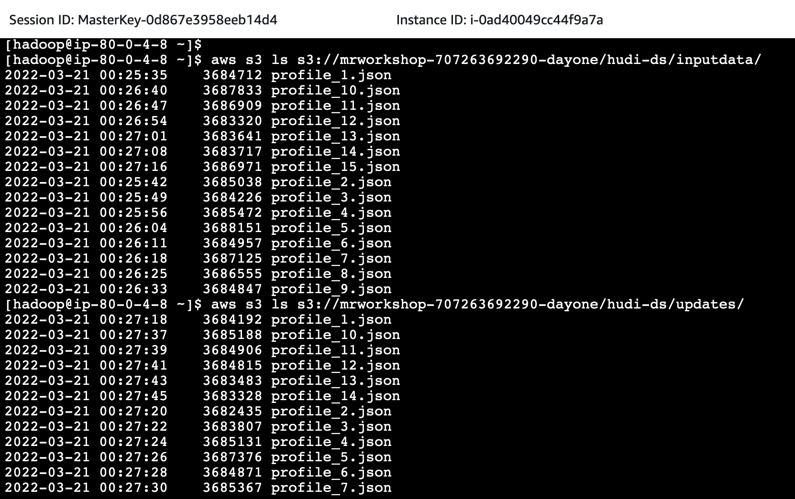
Copy the Hudi utilities bundle to HDFS.
hadoop fs -copyFromLocal /usr/lib/hudi/hudi-utilities-bundle.jar hdfs:///user/hadoop/
Let's submit DeltaStreamer step to the EMR cluster. You can submit this step on EC2 JumpHost or leader node of EMR cluster "EMR-Spark-Hive-Presto". Since we have the EMR leader node session active, let us use it to run the command.
Modify Add Steps Command for Bulk Insert Operation. Change the --cluster-id's value to your EMR cluster "EMR-Spark-Hive-Presto" cluster ID (Obtained from AWS Management Console -> Amazon EMR Console -> EMR-Spark-Hive-Presto -> Summary tab. Looks like j-XXXXXXXXX). Replace youraccountID with event engine AWS account ID.
aws emr add-steps --cluster-id j-XXXXXXXXX --steps Type=Spark,Name="Deltastreamer COW - Bulk Insert",ActionOnFailure=CONTINUE,Args=[--jars,hdfs:///user/hadoop/*.jar,--class,org.apache.hudi.utilities.deltastreamer.HoodieDeltaStreamer,hdfs:///user/hadoop/hudi-utilities-bundle.jar,--props,s3://mrworkshop-youraccountID-dayone/hudi-ds/config/json-deltastreamer.properties,--table-type,COPY_ON_WRITE,--source-class,org.apache.hudi.utilities.sources.JsonDFSSource,--source-ordering-field,ts,--target-base-path,s3://mrworkshop-707263692290-dayone/hudi-ds-output/person-profile-out1,--target-table,person_profile_cow,--schemaprovider-class,org.apache.hudi.utilities.schema.FilebasedSchemaProvider,--op,BULK_INSERT] --region us-east-1

You will get an EMR Step ID in return. You will see the corresponding Hudi Deltastreamer step being submitted to your cluster (AWS Management Console -> Amazon EMR Console -> EMR-Spark-Hive-Presto -> Steps). It will take about 2 minutes to complete.
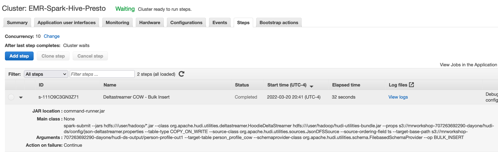
Check the S3 location for Hudi files. Replace youraccountID with event engine AWS account ID.
aws s3 ls s3://mrworkshop-youraccountID-dayone/hudi-ds-output/person-profile-out1/
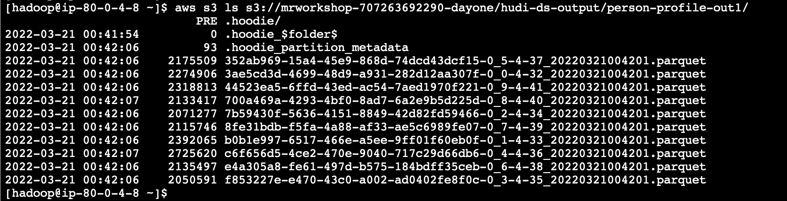
Let's go to the hive CLI on EMR leader node by typing "hive". Let's run the following command to create a table. Replace youraccountID with event engine AWS account ID.
CREATE EXTERNAL TABLE `profile_cow`(
`_hoodie_commit_time` string,
`_hoodie_commit_seqno` string,
`_hoodie_record_key` string,
`_hoodie_partition_path` string,
`_hoodie_file_name` string,
`Name` string,
`phone` string,
`job` string,
`company` string,
`ssn` string,
`street_address` string,
`dob` string,
`email` string,
`ts` string)
ROW FORMAT SERDE
'org.apache.hadoop.hive.ql.io.parquet.serde.ParquetHiveSerDe'
STORED AS INPUTFORMAT
'org.apache.hudi.hadoop.HoodieParquetInputFormat'
OUTPUTFORMAT
'org.apache.hadoop.hive.ql.io.parquet.MapredParquetOutputFormat'
LOCATION
's3://mrworkshop-youraccountID-dayone/hudi-ds-output/person-profile-out1/';
Select a record from this table and copy the value of hoodie_record_key and street_address to a notepad.
select `_hoodie_commit_time`, `_hoodie_record_key`, street_address from profile_cow limit 1;
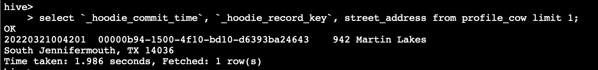
Exit from hive.
exit;
Now, let's do upsert operation with Hudi Deltastreamer. Change the --cluster-id's value to your EMR cluster "EMR-Spark-Hive-Presto" cluster ID (Obtained from AWS Management Console -> Amazon EMR Console -> EMR-Spark-Hive-Presto -> Summary tab. Looks like j-XXXXXXXXX). Replace youraccountID with event engine AWS account ID.
aws emr add-steps --cluster-id j-XXXXXXXXX --steps Type=Spark,Name="Deltastreamer COW - Upsert",ActionOnFailure=CONTINUE,Args=[--jars,hdfs:///user/hadoop/*.jar,--class,org.apache.hudi.utilities.deltastreamer.HoodieDeltaStreamer,hdfs:///user/hadoop/hudi-utilities-bundle.jar,--props,s3://mrworkshop-youraccountID-dayone/hudi-ds/config/json-deltastreamer_upsert.properties,--table-type,COPY_ON_WRITE,--source-class,org.apache.hudi.utilities.sources.JsonDFSSource,--source-ordering-field,ts,--target-base-path,s3://mrworkshop-youraccountID-dayone/hudi-ds-output/person-profile-out1,--target-table,person_profile_cow,--schemaprovider-class,org.apache.hudi.utilities.schema.FilebasedSchemaProvider,--op,UPSERT] --region us-east-1
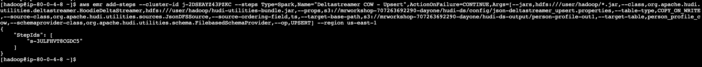
You will get an EMR Step ID in return. You will see the corresponding Hudi Deltastreamer step being submitted to your cluster (AWS Management Console -> Amazon EMR Console -> EMR-Spark-Hive-Presto -> Steps). Wait for the step to complete (~1 minute).
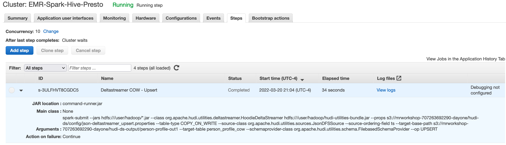
Let us check the street_address for the same _hoodie_record_key. Run the following query in hive CLI on the EMR leader node. Replace value of "_hoodie_record_key" in the where clause with the one you obtained from previous select query.
select `_hoodie_commit_time`, street_address from profile_cow where `_hoodie_record_key`='00000b94-1500-4f10-bd10-d6393ba24643';
Notice the change in commit time and street_address.
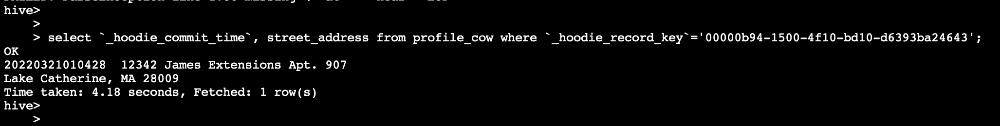
Change Data Capture with Hudi Deltastreamer¶
Go to RDS Web console and open the database that was created. Copy the endpoint of this database.
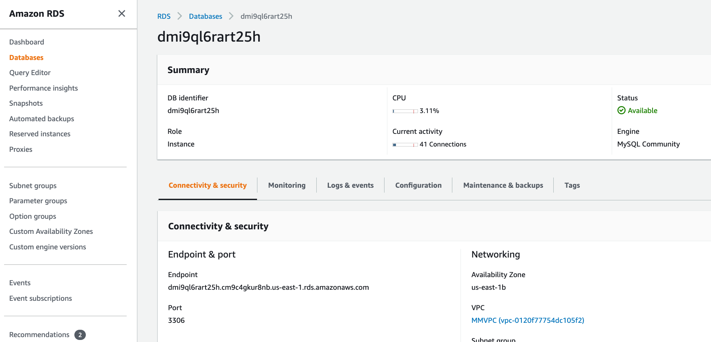
Login to your EC2 JumpHost using Session Manager or SSH and run the following command to connect to your DB. Replace "dbendpoint" value with the endpoint you copied from the RDS console.
sudo yum install -y mysql
mysql -h dbendpoint -uadmin -pTest123$
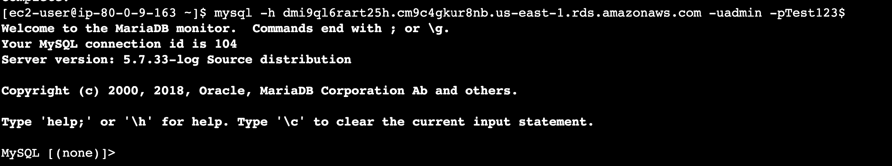
Once you are logged in to your database, run the following commands in the MySQL session to create a DB table.
call mysql.rds_set_configuration('binlog retention hours', 24);
create table dev.retail_transactions(
tran_id INT,
tran_date DATE,
store_id INT,
store_city varchar(50),
store_state char(2),
item_code varchar(50),
quantity INT,
total FLOAT);
Once the table is created, run the below queries to insert data into this table.
insert into dev.retail_transactions values(1,'2019-03-17',1,'CHICAGO','IL','XXXXXX',5,106.25);
insert into dev.retail_transactions values(2,'2019-03-16',2,'NEW YORK','NY','XXXXXX',6,116.25);
insert into dev.retail_transactions values(3,'2019-03-15',3,'SPRINGFIELD','IL','XXXXXX',7,126.25);
insert into dev.retail_transactions values(4,'2019-03-17',4,'SAN FRANCISCO','CA','XXXXXX',8,136.25);
insert into dev.retail_transactions values(5,'2019-03-11',1,'CHICAGO','IL','XXXXXX',9,146.25);
insert into dev.retail_transactions values(6,'2019-03-18',1,'CHICAGO','IL','XXXXXX',10,156.25);
insert into dev.retail_transactions values(7,'2019-03-14',2,'NEW YORK','NY','XXXXXX',11,166.25);
insert into dev.retail_transactions values(8,'2019-03-11',1,'CHICAGO','IL','XXXXXX',12,176.25);
insert into dev.retail_transactions values(9,'2019-03-10',4,'SAN FRANCISCO','CA','XXXXXX',13,186.25);
insert into dev.retail_transactions values(10,'2019-03-13',1,'CHICAGO','IL','XXXXXX',14,196.25);
insert into dev.retail_transactions values(11,'2019-03-14',5,'CHICAGO','IL','XXXXXX',15,106.25);
insert into dev.retail_transactions values(12,'2019-03-15',6,'CHICAGO','IL','XXXXXX',16,116.25);
insert into dev.retail_transactions values(13,'2019-03-16',7,'CHICAGO','IL','XXXXXX',17,126.25);
insert into dev.retail_transactions values(14,'2019-03-16',7,'CHICAGO','IL','XXXXXX',17,126.25);
commit;
We will now use AWS DMS to start pushing this data to S3.
Go to the DMS Web Console -> Endpoints -> hudidmsource. Check if the connection is successful. If not, test the connection again.
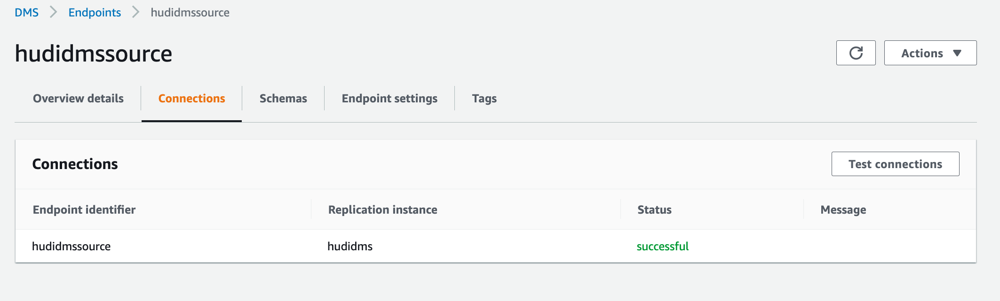
Start the Database migration task hudiload.
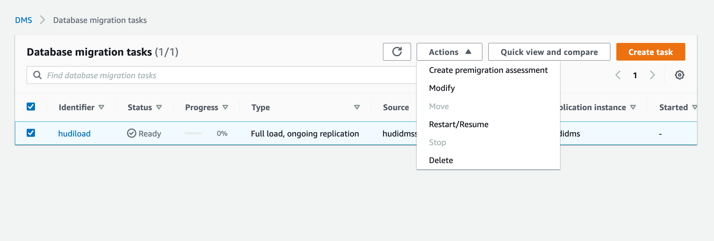
Once the task state changes from Running to "Load complete, replication ongoing", check the below S3 location for deposited files. Replace youraccountID with AWS event engine account ID.
aws s3 ls s3://mrworkshop-dms-youraccountID-dayone/dmsdata/dev/retail_transactions/
Now login to the EMR leader node of the cluster "EMR-Spark-Hive-Presto" using Session Manager or SSH and run the following commands. Replace youraccountID with AWS event engine account ID.
sudo su hadoop
cd ~
aws s3 mv s3://mrworkshop-dms-youraccountID-dayone/dmsdata/dev/retail_transactions/ s3://mrworkshop-dms-youraccountID-dayone/dmsdata/data-full/dev/retail_transactions/ --exclude "*" --include "LOAD*.parquet" --recursive
With the full table dump available in the data-full S3 folder, we will now use the Hudi Deltastreamer utility on the EMR cluster to populate the Hudi dataset on S3.
Run the following command directly on leader node. Replace youraccountID with AWS event engine account ID.
spark-submit --class org.apache.hudi.utilities.deltastreamer.HoodieDeltaStreamer \
--jars hdfs:///user/hadoop/*.jar \
--master yarn --deploy-mode client \
--conf spark.serializer=org.apache.spark.serializer.KryoSerializer \
--conf spark.sql.hive.convertMetastoreParquet=false \
/usr/lib/hudi/hudi-utilities-bundle.jar \
--table-type COPY_ON_WRITE \
--source-ordering-field dms_received_ts \
--props s3://mrworkshop-dms-youraccountID-dayone/properties/dfs-source-retail-transactions-full.properties \
--source-class org.apache.hudi.utilities.sources.ParquetDFSSource \
--target-base-path s3://mrworkshop-dms-youraccountID-dayone/hudi/retail_transactions --target-table hudiblogdb.retail_transactions \
--transformer-class org.apache.hudi.utilities.transform.SqlQueryBasedTransformer \
--payload-class org.apache.hudi.common.model.AWSDmsAvroPayload \
--schemaprovider-class org.apache.hudi.utilities.schema.FilebasedSchemaProvider \
--enable-hive-sync
Once this job completes, check the Hudi table by logging into Spark SQL or Athena console.
spark-sql --conf "spark.serializer=org.apache.spark.serializer.KryoSerializer" --conf "spark.sql.hive.convertMetastoreParquet=false" --jars hdfs:///user/hadoop/*.jar
Run the query:
select * from hudiblogdb.retail_transactions order by tran_id
You should see the same data in the table as the MySQL database with a few columns added by Hudi deltastreamer.
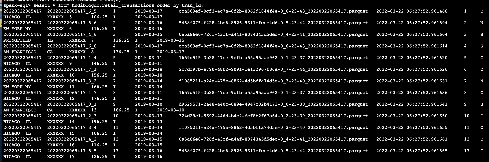
Now let's run some DML statements on our MySQL database and take these changes through to the Hudi dataset. Run the following commands in MySQL session from your EC2 JumpHost.
insert into dev.retail_transactions values(15,'2022-03-22',7,'CHICAGO','IL','XXXXXX',17,126.25);
update dev.retail_transactions set store_city='SPRINGFIELD' where tran_id=12;
delete from dev.retail_transactions where tran_id=2;
commit;
Exit from the MySQL session. In a few minutes, you see a new .parquet file created under s3://mrworkshop-dms-youraccountID-dayone/dmsdata/dev/retail_transactions/ folder in the S3 bucket. CDC data is being captured by our DMS replication task. You can see the changes in the DMS replication task under "Table statistics".
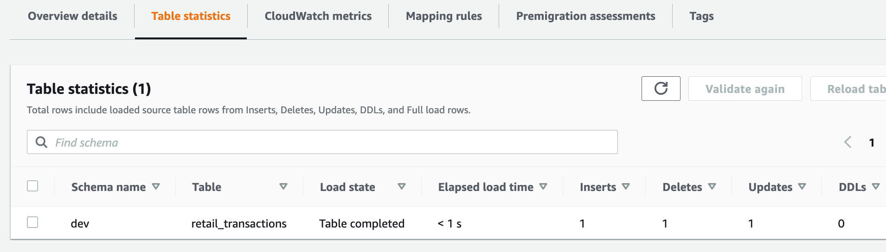
Now, lets take the incremental changes we made to Hudi. Run the following command on EMR leader node. Replace youraccountID with your AWS event engine account ID.
spark-submit --class org.apache.hudi.utilities.deltastreamer.HoodieDeltaStreamer \
--jars hdfs:///user/hadoop/*.jar \
--master yarn --deploy-mode client \
--conf spark.serializer=org.apache.spark.serializer.KryoSerializer \
--conf spark.sql.hive.convertMetastoreParquet=false \
/usr/lib/hudi/hudi-utilities-bundle.jar \
--table-type COPY_ON_WRITE \
--source-ordering-field dms_received_ts \
--props s3://mrworkshop-dms-youraccountID-dayone/properties/dfs-source-retail-transactions-incremental.properties \
--source-class org.apache.hudi.utilities.sources.ParquetDFSSource \
--target-base-path s3://mrworkshop-dms-youraccountID-dayone/hudi/retail_transactions --target-table hudiblogdb.retail_transactions \
--transformer-class org.apache.hudi.utilities.transform.SqlQueryBasedTransformer \
--payload-class org.apache.hudi.common.model.AWSDmsAvroPayload\
--schemaprovider-class org.apache.hudi.utilities.schema.FilebasedSchemaProvider \
--enable-hive-sync \
--checkpoint 0
Once finished, check the Hudi table by logging into Spark SQL or Athena console.
spark-sql --conf "spark.serializer=org.apache.spark.serializer.KryoSerializer" --conf "spark.sql.hive.convertMetastoreParquet=false" --jars hdfs:///user/hadoop/*.jar
Run the query:
select * from hudiblogdb.retail_transactions order by tran_id
You should see the changes you made in the MySQL table.
Apache Hudi with Spark Structured Streaming¶
This exercise will show how you can write real time Hudi data sets using Spark Structured Streaming. For this exercise, we will use real-time NYC Metro Subway data using MTA API.
Keep the EMR Session Manager or SSH session active. In a new browser tab, create a new SSM session for EC2 instance "JumpHost" (or SSH into EC2 instance "JumpHost"). i.e., under the EC2 console select the EC2 instance with name "JumpHost". Click on "Connect" -> Session Manager -> Connect.
Switch to EC2 user and go to home directory
sudo su ec2-user
cd ~
Run the following commands in EC2 instance to get the values of ZookeeperConnectString and BootstrapBrokerString.
clusterArn=`aws kafka list-clusters --region us-east-1 | jq '.ClusterInfoList[0].ClusterArn'`
echo $clusterArn
bs=$(echo "aws kafka get-bootstrap-brokers --cluster-arn ${clusterArn} --region us-east-1" | bash | jq '.BootstrapBrokerString')
bs_update=$(echo $bs | sed "s|,|\',\'|g" | sed "s|\"|'|g")
zs=$(echo "aws kafka describe-cluster --cluster-arn $clusterArn" --region us-east-1 | bash | jq '.ClusterInfo.ZookeeperConnectString')
Create two Kafka topics.
echo "/home/ec2-user/kafka/kafka_2.12-2.2.1/bin/kafka-topics.sh --create --zookeeper $zs --replication-factor 3 --partitions 1 --topic trip_update_topic" | bash
echo "/home/ec2-user/kafka/kafka_2.12-2.2.1/bin/kafka-topics.sh --create --zookeeper $zs --replication-factor 3 --partitions 1 --topic trip_status_topic" | bash
Install packages required by Kafka client on the JumpHost instance session (via SSH or AWS SSM).
pip3 install protobuf
pip3 install kafka-python
pip3 install --upgrade gtfs-realtime-bindings
pip3 install underground
pip3 install pathlib
pip3 install requests
Run the below command to modify the bootstrap servers in the file train_arrival_producer.py on the JumpHost's /home/ec2-user/ directory. Change
sudo sed -i "s|'bootstrapserverstring'|$bs_update|g" /home/ec2-user/train_arrival_producer.py
Export API key on the same session.
export MTA_API_KEY=UskS0iAsK06DtSffbgqNi8hlDvApPR833wydQAHG
Run the Kafka producer client and terminate the process using Ctrl + C after 10 seconds.
python3 train_arrival_producer.py
You can verify that the Kafka topics are being written to using the following commands
echo "/home/ec2-user/kafka/kafka_2.12-2.2.1/bin/kafka-console-consumer.sh --bootstrap-server $bs --topic trip_update_topic --from-beginning" | bash
After a few seconds exit using Ctrl + C.
echo "/home/ec2-user/kafka/kafka_2.12-2.2.1/bin/kafka-console-consumer.sh --bootstrap-server $bs --topic trip_status_topic --from-beginning" | bash
After a few seconds exit using Ctrl + C.
Now let's configure Spark consumer on EMR leader node using Session Manager or SSH. 9). SSH into the leader node of EMR cluster "EMR-Spark-Hive-Presto" (or use AWS Session Manager). Download Spark dependencies in EMR leader node session.
sudo su hadoop
cd ~
cd /usr/lib/spark/jars
sudo wget https://repo1.maven.org/maven2/org/apache/spark/spark-streaming-kafka-0-10_2.12/3.0.1/spark-streaming-kafka-0-10_2.12-3.0.1.jar
sudo wget https://repo1.maven.org/maven2/org/apache/spark/spark-sql-kafka-0-10_2.12/3.0.1/spark-sql-kafka-0-10_2.12-3.0.1.jar
sudo wget https://repo1.maven.org/maven2/org/apache/kafka/kafka-clients/2.2.1/kafka-clients-2.2.1.jar
sudo wget https://repo1.maven.org/maven2/org/apache/spark/spark-streaming-kafka-0-10-assembly_2.12/3.0.1/spark-streaming-kafka-0-10-assembly_2.12-3.0.1.jar
sudo wget https://repo1.maven.org/maven2/org/apache/commons/commons-pool2/2.11.1/commons-pool2-2.11.1.jar
In same session, provide all access to all HDFS folders. You can scope access per user if desired.
hdfs dfs -chmod 777 /
Switch to the SSH/SSM session of EC2 instance “JumpHost”. Get the bootstrap string from the below command on the EC2 JumpHost session.
echo $bs
Example output: "b-3.mskcluster.i9x8j1.c4.kafka.us-east-1.amazonaws.com:9092,b-1.mskcluster.i9x8j1.c4.kafka.us-east-1.amazonaws.com:9092,b-2.mskcluster.i9x8j1.c4.kafka.us-east-1.amazonaws.com:9092"
Copy your bootstrap servers output to a notepad.
Run the Kafka producer program again and keep it running.
python3 train_arrival_producer.py
Now, go to the EMR Studio's JupyterLab workspace and open workshop-repo/files/notebook/amazon-emr-spark-streaming-apache-hudi-demo.ipynb. Make sure that "Spark" kernel is selected.
Replace the broker string with the value of bootstrap servers you copied to your notepad. Replace youraccountID with event engine AWS account ID. Instructions are in the notebook.
Once you have made the changes, run all the cell blocks. Spark streaming job runs every 30 seconds. You can increase the duration if you want to. Based on the time of the day you run this code, the results may vary. After sometime, query this table using hive or even Athena.
Go to the AWS Web Console -> Athena -> Explore the query editor. Since this would be your first time using Athena console, you need to go to the Settings -> Manage and add your Query result location like -> s3://mrworkshop-youraccountID-dayone/athena/.
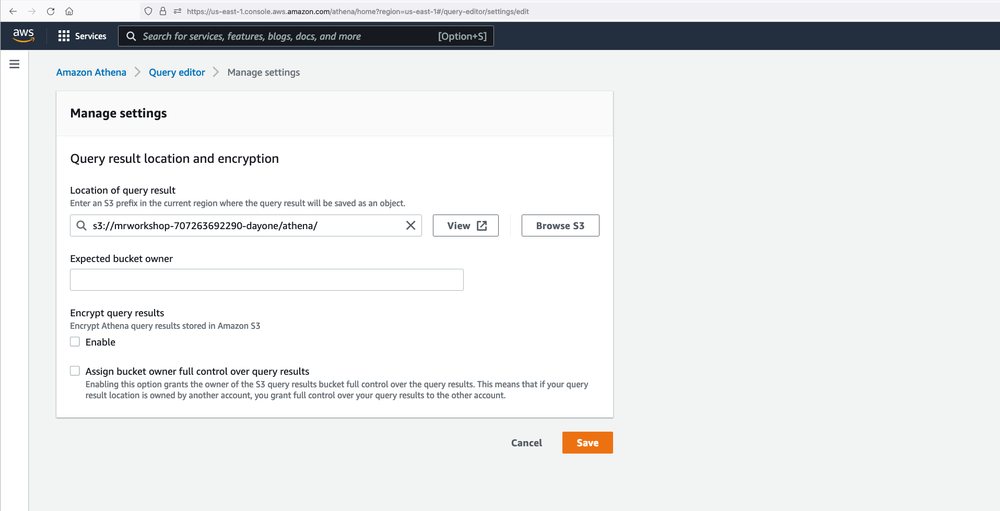
Now, you can run the following queries once in every 2 minutes or so to see the live changes. You can also build live dashboards using Amazon Quicksight.
select count(*) from hudi_trips_streaming_table;
select tripId, numoffuturestops from hudi_trips_streaming_table;
After inspecting, stop your Python Kafka producer on the EC2 JumpHost session using Ctrl + C.
On EMR Studio workspace session, click on the stop icon to stop the Spark Structured Streaming job.